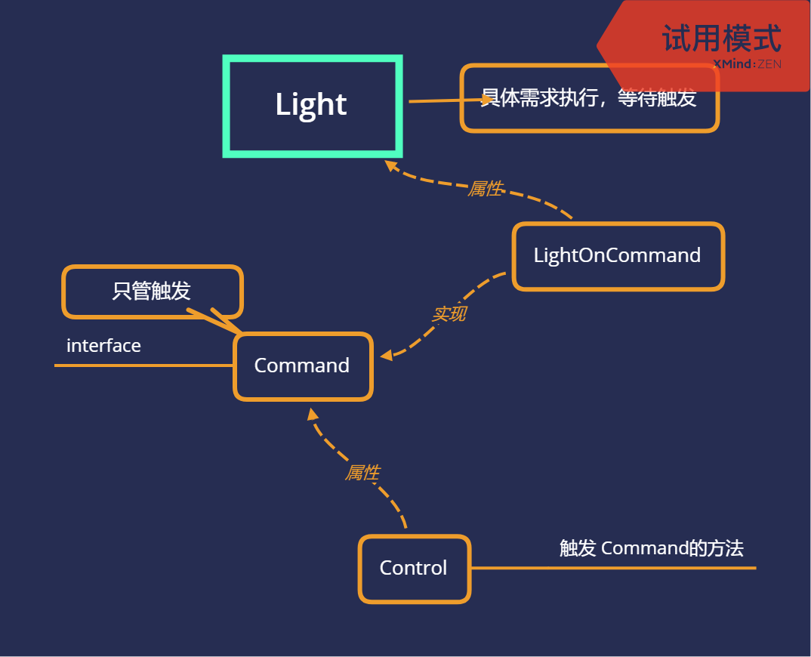
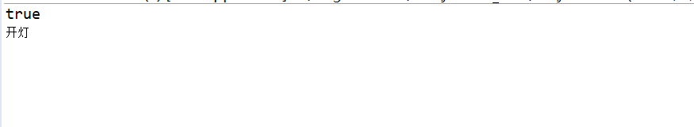

行为型-命令模式
定义
- 将请求封装为一个对象，这样可以使用不同的请求参数化其他对象（将不同请求依赖注入到其他对象），并且能够支持请求的排队执行、记录日志、撤销等功能
思路

代码
1
2
3
4
5
6
7
8public class Light {
public void on() {
System.out.println("开灯");
}
public void off() {
System.out.println("关灯");
}
}1
2
3public interface Command {
public void execute();
}1
2
3
4
5
6
7
8
9
10
11
12public class LightOnCommand implements Command {
Light light;
public LightOnCommand(Light light) {
this.light = light;
}
public void execute() {
light.on();
}
}1
2
3
4
5
6
7
8
9
10
11
12
13public class SimpleRemoteControl {
Command slot;
public SimpleRemoteControl() {
}
public void serCommand(Command command) {
slot = command;
}
public void buttonWasPressed() {
slot.execute();
}
}1
2
3
4
5
6
7
8
9
10SimpleRemoteControl simpleRemoteControl = new SimpleRemoteControl();
Light light = new Light();
LightOnCommand lightOnCommand = new LightOnCommand(light);
//serCommand 的参数类型是 Command， 但是LightOnCommand 实现了 Command
//接口允许通过创建一个能被向上转型为多种基类的类型，来实现多种某种类似多重继变种的特性
simpleRemoteControl.serCommand(lightOnCommand);
simpleRemoteControl.buttonWasPressed();
运行结果

用处
- 队列请求
- 日志请求
- 本文链接：https://www.wl960127.top/posts/22977/
- 版权声明：本站内容均为个人学习笔记,不涉及商业用途，仅提供学习参考,第三方摘录已署名链接,未署名请评论添加,转载署名来源即可。
分享